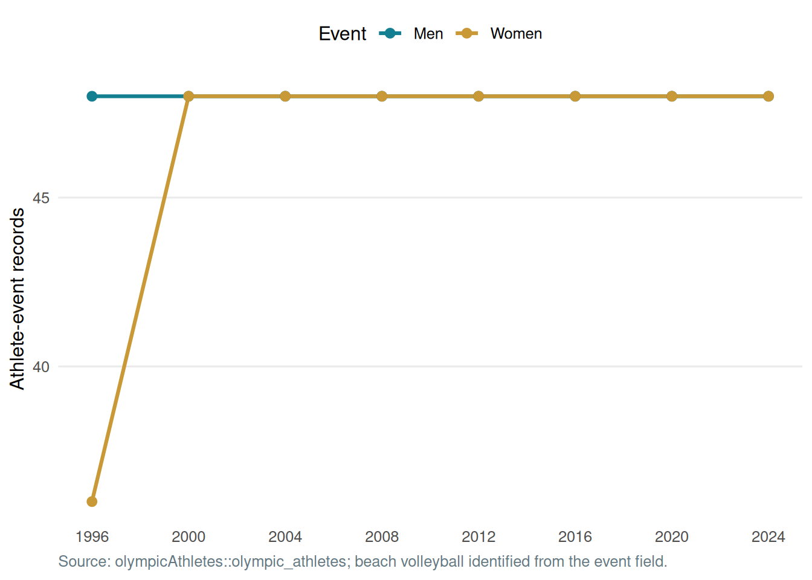

Source: olympicAthletes::olympic_athletes. Shows r scales::comma(nrow(athlete_profiles)) of r scales::comma(nrow(beach_athletes)) athlete-event records with reported height; medal status is unavailable in the source for 2020 and 2024.
Men vs Women
Two events, one Olympic stage
Beach volleyball has featured men’s and women’s tournaments at every Games since its 1996 debut. Participation is measured in athlete-event records—two records for each competing pair—while podium results count each country-team once.
Individual athlete profiles
Each point is a beach-volleyball athlete-event record. The age-height relationship is compared by event; shapes show medals only where the source records them.
Source: olympicAthletes::olympic_athletes. The chart plots 668 of 756 athlete-event records with reported height; records without height are omitted. Medal status is not reported by this source for 2020 or 2024.
Participation through the years

Recorded participation begins lower for women at the sport’s debut: 36 athlete-event rows versus 48 for men in 1996. From 2000 through 2024, both events have 48 rows per Games in this dataset; these are athlete-event counts, not audience or popularity measures.
Who reached the podium?
Each point is one of 48 medal-winning country-teams. Panels compare men’s and women’s results by Olympic year; 2020 and 2024 podiums use official Olympic results.
Sources: olympicAthletes for 1996–2016; official Olympic results for Tokyo 2020 and Paris 2024. The plot shows all 48 country-team medal results once each, not once per athlete.
Across eight editions, each event awards 24 team medals. Brazil leads both tallies (8 women’s and 6 men’s medals), while the United States has 7 women’s and 4 men’s; Australia’s three medals are all in the women’s event.